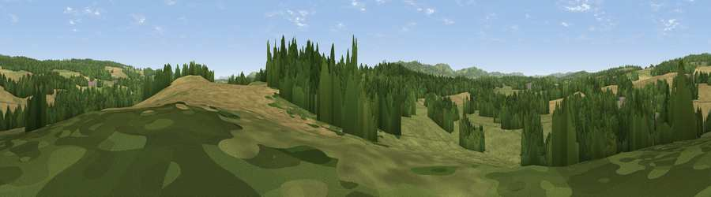

Viewpoint near Midhurst
#31633 in England · top 55% of its area beats it · near MidhurstThe view, rendered

A 360° render of this exact spot computed from the terrain model, tree cover and land cover — summer colours, afternoon light, calibrated against photographs of famous viewpoints. Real trees, hedges and buildings will differ in detail.
The panorama
Grey silhouette: terrain skyline in each direction (720 bearings, Earth curvature and refraction included). Dashed green: skyline with trees (+15 m) and buildings (+8 m) as obstacles. Blue strip: how far the ground is visible on each bearing.
Where the view opens
Wedge length = distance to the farthest visible ground on that bearing (vegetation-aware). Rings at 10, 25 and 50 km.
What fills the view
42% woodland · 32% grassland · 25% cropland · 1% built-up
Angular shares of the visible panorama (visual magnitude), not map area. Landscape diversity 0.50 (0–1 Shannon).
Key numbers
More beautiful places nearby
The staircase of upgrades: each row has a higher view potential than everything closer. Driving times are estimates from straight-line distance, calibrated against real road routing — check an actual route before setting out.
| Place | Direction | Drive | Score |
|---|---|---|---|
| Telegraph Hill | N · 4 km | ~9 min | 58.5 |
| Viewpoint near Lodsworth | NE · 5 km | ~10 min | 65.1 |
| Viewpoint near Cocking | SSW · 6 km | ~12 min | 78.4 |
| Linch Down | SSW · 6 km | ~12 min | 85.2 |
| Beacon Hill | WSW · 8 km | ~16 min | 85.8 |
| Chanctonbury Ring | ESE · 28 km | ~45 min | 87.0 |
| Viewpoint near St. Lawrence | SW · 56 km | ~78 min | 88.2 |
| Viewpoint near Niton | SW · 60 km | ~82 min | 89.2 |
50.99410, -0.75208 · source: screening · position refined by local search. Computed location — check access rights before visiting.